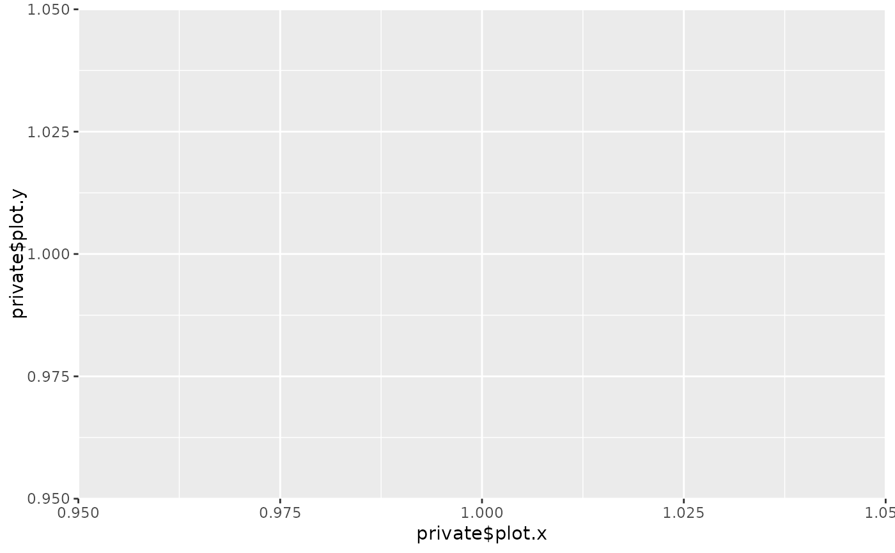

This class inherits from TestStatistic and implements a function to calculate the test statistic (and x-y-values that can be used to plot the underlying process).
The process underlying the test statistic is given in Bierens & Wang (2012) doi:10.1017/S0266466611000168 and defined by $$\hat{T}_n^{(s)}(c) = \frac{1}{(2c)^{p+1}} \int_{[-c,c]^p} \int_{-c}^c \left|\frac{1}{\sqrt{n}} \sum_{j=1}^n \Big(\exp(i \tau Y_j) - \exp(i \tau \tilde{Y}_j)\Big) \exp(i \xi^T X_j)\right|^2 d\tau d\xi $$
Super class
gofreg::TestStatistic -> SICM
Methods
Method new()
Initialize an instance of class SICM.
Arguments
cchosen value for integral boundaries (see Bierens & Wang (2012))
transxfunction(values)used to transform x-values to be standardized and bounded; default is standardizatiin by subtracting the mean and dividing by the standard deviation and then applying arctantransyfunction(values, data)used to transform y-values to be standardized and bounded (same method is used for simulated y-values); default is standardizatiin by subtracting the mean and dividing by the standard deviation and then applying arctan
Method calc_stat()
Calculate the value of the test statistic for given data and a model to test for.
Arguments
datadata.frame()with columns x and y containing the datamodelParamRegrModel to test for
Examples
# Create an example dataset
n <- 100
x <- cbind(runif(n), rbinom(n, 1, 0.5))
model <- NormalGLM$new()
y <- model$sample_yx(x, params=list(beta=c(2,3), sd=1))
data <- dplyr::tibble(x = x, y = y)
# Fit the correct model
model$fit(data, params_init=list(beta=c(1,1), sd=3), inplace = TRUE)
# Print value of test statistic and plot corresponding process
ts <- SICM$new(c = 5)
ts$calc_stat(data, model)
print(ts)
#> Test statistic with value 0.4004599
plot(ts)
#> `geom_line()`: Each group consists of only one observation.
#> ℹ Do you need to adjust the group aesthetic?

# Fit a wrong model
model2 <- NormalGLM$new(linkinv = function(u) {u+10})
model2$fit(data, params_init=list(beta=c(1,1), sd=3), inplace = TRUE)
# Print value of test statistic and plot corresponding process
ts2 <- SICM$new(c = 5)
ts2$calc_stat(data, model2)
print(ts2)
#> Test statistic with value 10.79171
plot(ts2)
#> `geom_line()`: Each group consists of only one observation.
#> ℹ Do you need to adjust the group aesthetic?